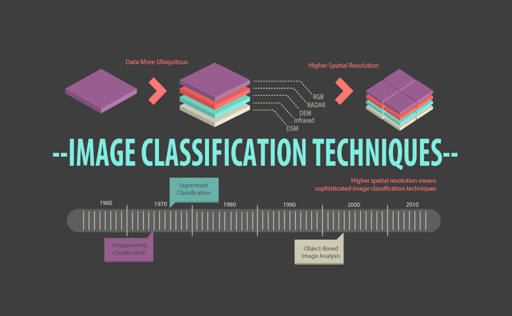
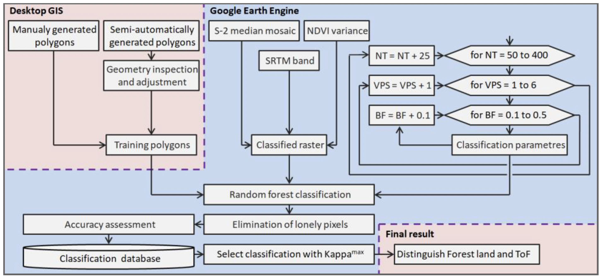

6 WEEK6
6.1 Key Points
6.1.1 Image Classification
Image classification is the process of categorizing and labeling groups of pixels or vectors within an image based on specific rules (Karbhari et al. 2009). And in remote sensing, image classification is the process of assigning land cover classes to pixels. For example, classes include water, urban, forest, agriculture, and grassland.

The type of classification method:
- Unsupervised image classification
- Supervised image classification
- Object-based image analysis
The first two are very common approaches, they are in the same definition as in machine learning. We will talk about some of the classical methods in this week. For the Object-based image analysis, it groups pixels into representative vector shapes with size and geometry. It is quite effective in some cases and we will introduce it in the next week.
6.1.2 Decision Tree
Classification and Regression Trees (CART) algorithm is one of the popular Decision Tree and it is a Supervised image classification. It is an umbrella word that refers to the following types of decision trees:
Classification Trees:attempt to predict a class label. In other words, classification is used for problems where the output (target variable) takes a finite set of values, e.g., whether it will rain tomorrow or not.
Regression trees: used to predict a numerical label. This means your output can take an infinite set of values, e.g., a house price.
The structure of a decision tree consists of three main parts: Root nodes, Internal Nodes and Leaf Nodes. The nodes are split into subnodes on the basis of a threshold value of an attribute.
For Classification Trees
The CART algorithm does that by searching for the best homogeneity for the subnodes, with the help of the Gini Index criterion.
Gini Impurity is a measurement of the likelihood of an incorrect classification of a new instance of a random variable. It is a measurement used to build Decision Trees to determine how the features of a dataset should split nodes to form the tree.
Gini impurity= 1-(probability of yes)^2-(the probability of no)^2So basically, when training the model, CART builds a process to subset the data, this means different data of categories will be aligned to different nodes(subset data group). And when it makes the finally decision (for example the impure = 0), stopping splitting data into smaller chunks and naming the category.
For Regression Trees
The main question is also about how far (deep) do we run a decision tree? When should we stop adding new nodes? As the data is numeric now, we introduce the Tree score.
Like all other machine learning algorithms, it is important to avoid overfitting. In Decision Tree, the way we weaken the overfitting is called PRUNING (removing the leaves).
Tree score = SSR(sum of squared residuals) + tree penalty (alpha) * T (number of leaves)The lower the Tree score is, the better the classifier will be. So if when we add two new leaves (node G and node H) grow from a existing leave (node F), and then the value of Tree score increases. In this case, we should not creating new node node G and node H.
6.1.3 Random Forests
Random forest, like its name implies, consists of a large number of individual decision trees that operate as an ensemble. Each individual tree in the random forest spits out a class prediction and the class with the most votes becomes our model’s prediction.The fundamental concept behind random forest is a simple but powerful one — the wisdom of crowds.
So, it basically a vote machine. Each decision tree will provides a classification/regression result, and the most votes wins. In this case, we hope that we have different trees in the forest, this is just like we do not want to a person votes twice. So, an ensemble method is needed in order to combines the predictions from multiple machine learning algorithms together to make more accurate predictions than any individual model.
This means we can literally use different data to train trees.
Bootstrap Aggregation (or Bagging for short), is a simple and very powerful ensemble method. It generates additional data for training from the dataset. This is achieved by random sampling with replacement from the original dataset. Sampling with replacement may repeat some observations in each new training data set. Every element in Bagging is equally probable for appearing in a new dataset.
Or we can choose different group of attributes to build decision tree. For example, to classify whether a watermelon is good or not, we can consider from its color, weight, whether the melon is bent or not, whether the sound of slapping a watermelon is crisp and clear or not, etc. We can use the first 3 attributes to train a classifier and then the next 3 …
When we are building a decision tree and there are a lot of attributes of the object, then how can be choose wisely in order to increase our classification accuracy? If we follow a random approach, it may give us bad results with low accuracy. So, here is some criteria which will calculate values for every attribute.
Entropy, Information gain, Gini index, Gain Ratio, Reduction in Variance Chi-SquareThe values are sorted, and attributes are placed in the tree by following the order i.e, the attribute with a high value(in case of information gain) is placed at the root. For each metric, its defination can be found here.
6.1.4 Support Vector Machine (SVM)
Here we introduce another well-used machine learning algorithms: Support Vector Machine (SVM)
As we can see in the figure, the objective of the support vector machine algorithm is to find a hyperplane in an N-dimensional space (N — the number of features) that distinctly classifies the data points. The left picture shows there are quite a few planes can seperate the two classes of data. However, what we want is one with the maximum margin (the right picture).
Like other algorithms, we can build a cost function to find the convergence point where we can have the maximum margin. In SVM, we call it Hinge loss function.
In addition, hyperparameters like C and Gamma (or Sigma) control SVM wiggle.
6.2 Application
- Recognize the Land Use and Land Cover
Classification enables us to obverse land use and land cover distribution in cities, the classified results can be applied in many scenarios. For example, detecting the urban sprawl, monitoring natural disasters, evaluating the urban greenspace rate, etc. Basically, it help us to explore the information in imagery. Here is an application study by Svoboda et al. (2022)
LCLUC program is one of the most important sources of information on the development of global environmental change. This study tried to build a Sentinel-2 data classification on Google Earth Engine to achieve Land use, land-use change and forestry (LULUCF) detection program. The study conducted several experiments to determine the best values for the Number of Trees, Variables per Split and Bag Fraction parameters.
Figures below shows its workflow and the classification results

- Evaluate the Importance Level of Attributes
As we said before, when constructing a decision tree, it is important to decide which attribute is considered at the root. We can use quite a few indices to evaluate such as Entropy, Information gain, Gini index… and fortunately, most of the decision tree and random forest algorithms will help us to do it. This means we can tell the importance sequence from the constructed tree. The first one being considered is the one of most importance.
Here is an example of using this kind of idea to compute the importance degree of each index and to obtain the flood hazard map (Farhadi et al. 2021). In this study, 11 risk indices (Elevation (El), Slope (Sl), Slope Aspect (SA), Land Use (LU), Normalized Difference Vegetation Index (NDVI), Normalized Difference Water Index (NDWI), Topographic Wetness Index (TWI), River Distance (RD), Waterway and River Density (WRD), Soil Texture (ST]), and Maximum One-Day Precipitation (M1DP)) were provided to predict the flood risk. And the author took Random Forest as a robust data mining technique, to define the Index Importance Degree of each attributes.
The methodology in details can be found in the paper. And according to the results, the WRD index containing about 23.8 percent of the total risk has the greatest impact on floods. The figure below shows the ranking of all the indices.
6.3 Reflection
This week we mainly studied the application of machine learning methods in remote sensing image processing, with a special focus on the application of decision trees and random forests in classification tasks. Both methods are widely used, because that they are very easy to understand and interpret because they can be visualized.This type of algorithm is like a human being when making a choice, by judging different characteristics, making a choice step by step, and finally reaching the terminal node. On the basis of the decision tree, the random forest is like a group of people making choices together, and then get the final decision in the form of voting.
However, although their rationale is simple, there are still many factors that need to be considered in the process of building a decision tree. For example, how to determine the depth of the tree. Sometimes decision tree learners may over complicate the tree and not generalize the data well. This problem is known as overfitting.In addition，They don’t have very good stability. One small variation in data may cause the tree to completely change.
Finally, the two application examples in this learning diary also prove that the combination of GEE and machine learning methods is very effective. When there is a lot of data to be processed, or when the algorithm has a certain complexity, using the GEE platform is a choice.
6.4 Reference
Svoboda J, Štych P, Laštovička J, Paluba D, Kobliuk N. Random Forest Classification of Land Use, Land-Use Change and Forestry (LULUCF) Using Sentinel-2 Data—A Case Study of Czechia. Remote Sensing. 2022; 14(5):1189. https://doi.org/10.3390/rs14051189
Farhadi H, Najafzadeh M. Flood Risk Mapping by Remote Sensing Data and Random Forest Technique. Water. 2021; 13(21):3115. https://doi.org/10.3390/w13213115